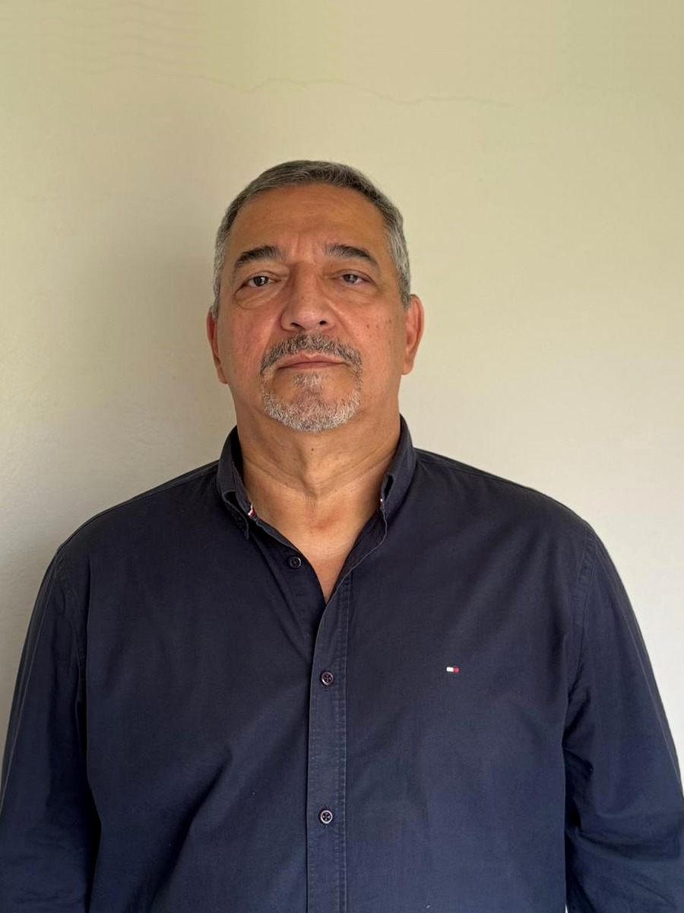

48 anos entre escritório e área operacional.

Sou Engenheiro Eletricista (Eletrônica) e Engenheiro de Segurança do Trabalho com 48 anos no ciclo completo da engenharia — 35 anos na Telemar e Oi e quase 13 anos como Gerente Sênior de Implantação na Logictel. Projeto, execução de redes aéreas e subterrâneas, galerias, dutos e manutenção de sistemas em operação — em ambientes de risco real (elétrico, altura, escavação, confinado). Disponível para atuar como Assistente Técnico, elaborar pareceres e contraditar laudos adversos.
Essa bagagem técnica é o que me permite fortalecer a estratégia processual onde ela já tem base técnica e identificar falhas no laudo adverso. Quem viveu as cinco etapas (planejamento, projeto, obra, operação e manutenção) enxerga responsabilidade e causa raiz onde laudos superficiais não aprofundam.
Como assistente técnico, meu trabalho é aumentar a probabilidade de êxito: quesitos estratégicos que cercam a perícia, crítica ao laudo adverso com respaldo documental e parecer técnico que faz parte da prova — não apenas da argumentação.
Formulação dos quesitos principais e suplementares de forma que cerquem a perícia — cada pergunta é uma rota que o perito precisa responder por escrito.
Identifico falha metodológica, lacuna normativa, salto lógico e ponto onde cabe impugnação formal ou pedido de esclarecimento.
Documento técnico assinado para embasar petição inicial, defesa ou mediação extrajudicial. Faz parte da prova.
Resposta técnica formal apontando o que reforça o cliente e o que deve ser questionado — antes da sentença.
Primeira análise do caso é objetiva e orientadora: eu indico se o investimento em assistência técnica faz diferença no resultado — e em qual frente.